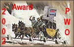

|
|
The PWO Award
The Philatelic Webmasters Organization (PWO) proposes an Annual PWO Award to philatelic sites that distinguished themselves by something special, unique or very attractive.
For this award there weren't elaborated precise criteria or rules.
Even if it's an annual award, it won't necessarily be attributed during a given year, and a site can be also awarded retroactively.
Any philatelic webmaster, PWO member or not, may apply for it.
PWO can also award sites that haven't applied for it, and this at its full discretion.
The very few sites and webmasters that could be awarded, will have the right to display the image shown below:

and will link it to this page. This page will in the future list the sites and the webmasters that were awarded.
The attribution of this award will be decided by the PWO Executive Council, who will freely consult philatelic webmasters specialized in philatelic domains close to that of candidate's site.
In order to apply, send us an e-mail, in which please specify :
Good luck, and TIA for your participation.
|
Created: 07/21/2002. Revised:
07/21/02. Copyright © 2002 by PWO and by Victor Manta, Switzerland All rights reserved worldwide. |
|